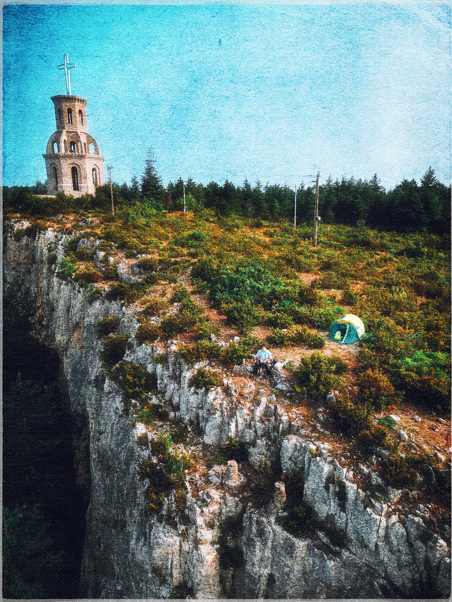
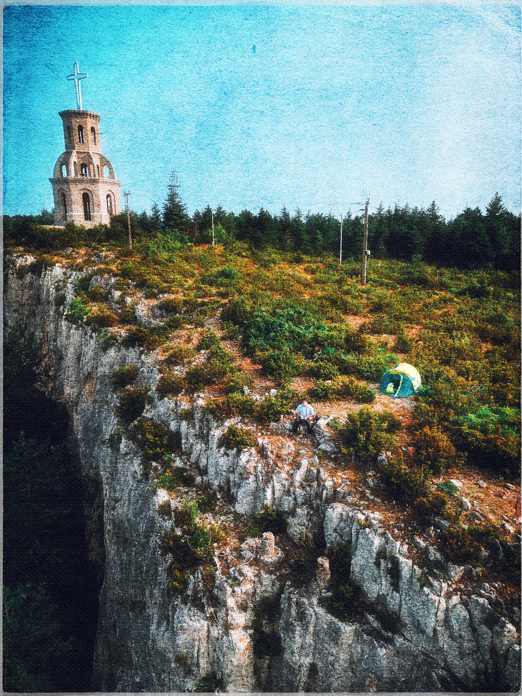

kaaalm
you may also like
• "as lost as a soul" •


"hwado"

"hwado" is a Korean term symbolysing
the entire journey of creativity and imagination
through the realisation of an artistic act,
and goes beyond the simple act of creating.
each picture that i bring back from my treks and adventures;
is a reflection of light, colors and textures evolution,
that i work through my post production with mixed media,
when i'm back home and getting back into my routine.
i feel that the mountains inspire me,
i desire them,
i need them,
and i feel that they heal me.
i have included my trekking photos in this series to show you the cycle that my work represents,
the days of walking,
the hardships of hiking,
the places photographed, where no one goes,
the memory of touching the rocks,
the smells and the people encountered,
the feelings experienced,
the return to the studio,
the post production processes,
the daily mental struggles,
the cycle of routine that begins again,
again and always again,
working, working, working...
to have the peace of mind to go back up into my mountains.
this is my journey.


 



more coming next...
collab and art prints available on request.